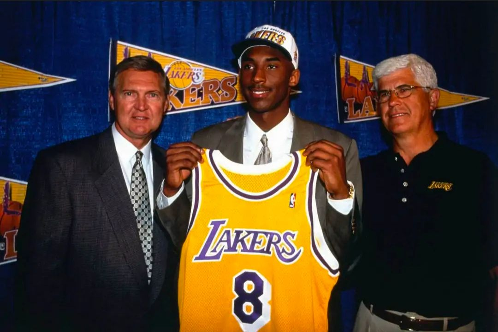

| 早期生活 |
|---|
1978年8月23日，科比·布莱恩特出生在美国宾夕法尼亚州费城。3岁时，科比开始打球，在他成长中最喜欢的球队是湖人队。6岁时，科比随父亲前往意大利生活。1991年，科比一家搬回了美国 高中时期，科比就读于费城劳尔梅里恩高中。高一时，科比带领劳尔梅里恩高中取得31胜3负的战绩，其中，在与马普尔高中的比赛中，科比得到高中生涯的最高分50分；在与切斯特高中的比赛中，科比得到34分、15篮板、6助攻和9盖帽的准三双数据。高四时，科比场均得到30.8分、12.0篮板、6.5助攻、4.0抢断和3.8盖帽，带领劳尔梅里恩高中取得27连胜并捧起队史53年来首个州冠军奖杯。高中生涯，科比总共得到2883分，刷新由威尔特·张伯伦所保持的宾夕法尼亚州东南赛区高中生总得分纪录，成功签约NBA豪门洛杉矶湖人队 。 
|